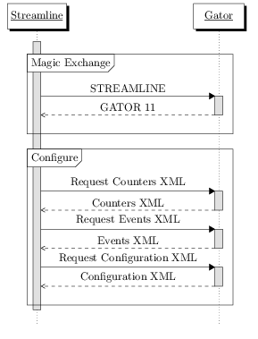
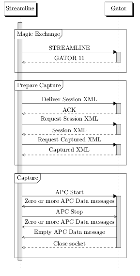

Gator v11 (DS-5v5.12) Protocol
Introduction
The purpose of this document is to describe the TCP/IP protocol used by gator or other implementing clients to communicate with Streamline version 5.12 or later. The gator source code, distributed as part of DS-5, is the reference implementation of this protocol. The protocol may change with future releases of Streamline, but Streamline will maintain backwards compatibility with this version of the protocol so that clients need only implement one version of the protocol. The client is expected to be able to parse and generate simple XML as well as be able to ignore additional or unexpected nodes or attributes. Only the XML features described will be used, so the more complex features of XML, such as XML namespaces, are not required.
Target-Host Protocol
Magic Exchange
A handshake so server and client recognize each other
- The client reads ASCII newline (\n) delimited strings until STREAMLINE\n is read. Anything else is discarded.
- Send GATOR 11\n
Further communication from Streamline come as Commands
Command Header
Commands from Streamline consist of a header followed by a body. Streamline then expects a Response
| Name | Type | Description | ||||||||||||
|---|---|---|---|---|---|---|---|---|---|---|---|---|---|---|
| Code | byte | The type of command
|
||||||||||||
| Length | Little Endian int32 | Number of bytes in the body |
If the client receives an unrecognized command, it should respond with a NAK.
Request XML Body
Represents a request from Streamline formatted as XML with the root node request and an attribute representing the type of request. For example, this is a request for Events XML
<?xml version="1.0" encoding="US-ASCII" ?>
<request type="events">
</request>
| Request | Response Code | Response Body |
|---|---|---|
| <request type="events"> | XML | Events XML |
| <request type="configuration"> | XML | Configuration XML |
| <request type="counters"> | XML | Counters XML |
| <request type="session"> | XML | Session XML. Must return exactly what was delivered by Streamline. If not received when requested, send a NAK. Streamline requests Session XML prior to requesting Captured XML |
| <request type="captured"> | XML | Captured XML Streamline requests Captured XML prior to starting a capture. |
| <request type="defaults"> | XML | default Configuration XML |
Deliver XML Body
| Request | Response Code |
|---|---|
| Session XML | ACK |
| Configuration XML | ACK |
APC Start Body
No Command Body. This indicates that capture should begin and Streamline now expects to receive APC Data Responses. No ACK is expected and no further XML exchange takes place. If a failure occurs, the client should send an Error.
APC Stop Body
No Command Body. Capture should now end and no ACK is expected, but APC Data Responses can continue to arrive until all captured data is sent, then the connection should be closed. If a failure occurs, the client should send an Error.
Disconnect Body
No Command Body. No ACK is expected, close the connection
Ping Body
No Command Body. Send an ACK Response
Response Format
Responses consist of a header followed by a body
Response Header
Identical to the Command Header but the Codes are different
| Name | Type | Description | ||||||||||
|---|---|---|---|---|---|---|---|---|---|---|---|---|
| Code | byte | The type of command
|
||||||||||
| Length | Little Endian int32 | Number of bytes in the body |
XML Body
XML, format is dependent on the Request see Request XML Body
APC Data Body
An APC Frame. If the length is zero, it is the End of Sequence message which indicates that all APC Frames have been transmitted to Streamline.
ACK Body
No Response Body. Indicates the Command was successful
NAK Body
Indicates a synchronous non-fatal error occurred when handling a request. Can contain a UTF-8 error message. The length is specified in the header, so no NULL character is expected. Indicates the Command failed. The connection can continue.
Error Body
Indicates a synchronous fatal error occurred when responding to a request. A UTF-8 error message. The length is specified in the header, so no NULL character is expected. The error is terminal and the connection must be closed. Errors may be sent asynchronously, ie without a request, but Streamline may not process them immediately.
XML
Events
Listing of all possible counters
events
The events root node of Events XML can have any number of counter_set and category child nodes
counter_set
The counter_set node has no children and the following attributes. Counter sets are used when the number of counters that can be enabled in a category is restricted. Streamline will respect the restriction and assign a name from the set to a counter in Configuration XML.
| Name | Type | Description |
|---|---|---|
| name | String | Name of the counter_set |
| count | String | Number of counters in the set. Counter names are derived by appending a number, starting at zero, to the set name. Ex, if the set name is ARM_Cortex-A8_cnt and the count is 4, then the counter names in the set are ARM_Cortex-A8_cnt0, ARM_Cortex-A8_cnt1, ARM_Cortex-A8_cnt2 and ARM_Cortex-A8_cnt3 |
category
The category node can have any number of event child nodes and the following attributes
| Name | Type | Description |
|---|---|---|
| name | String | Name of the category show in Streamline |
| counter_set | String | Required if sub event uses the event attribute, name of the related counter_set |
| per_cpu | Boolean | Defaults to false, see the per_cpu attribute of the event node |
| supports_event_based_sampling | Boolean | Defaults to false, see the supports_event_based_sampling attribute of the event node |
event
The event node has no children and the following attributes
| Name | Type | Description |
|---|---|---|
| counter | String | Required if event is not present, name of the counter |
| event | Hex Integer | Required if counter is not present, hardware counter number |
| title | String | Title of the event, shown in Streamline before the name. Used to group counters. |
| name | String | Name of the event, shown in Streamline after the title |
| per_cpu | Boolean | Is true if this event is per cpu as opposed to global. Defaults to the per_cpu attribute of the category node |
| supports_event_based_sampling | Boolean | Is true if this event supports event base sampling. Defaults to the supports_event_based_sampling attribute of the category node |
| display | String | Optional, one of average, maximum, minimum, hertz, accumulate (Default). This is the same as adding .avg, .max, .min or .hz (accumulate is the default) to the counter name in the chart configuration panel in Streamline. |
| units | String | Optional, units to display in Streamline |
| average_selection | Boolean | Optional, Averages the values displayed by the Cross Section Marker in Streamline |
| description | String | Description to show in Streamline. Used as the tooltip for the counter |
Example:
<?xml version="1.0" encoding="UTF-8"?>
<events>
<counter_set name="ARM_Cortex-A8_cnt" count="4"/>
<category name="Cortex-A8" counter_set="ARM_Cortex-A8_cnt" per_cpu="yes" supports_event_based_sampling="yes">
<event counter="ARM_Cortex-A8_ccnt" title="Clock" name="Cycles" display="hertz" units="Hz" average_selection="yes" description="The number of core clock cycles"/>
<event event="0x00" title="Software" name="Increment" description="Incremented only on writes to the Software Increment Register"/>
<event event="0x01" title="Cache" name="Instruction refill" description="Instruction fetch that causes a refill of at least the level of instruction or unified cache closest to the processor"/>
<!-- ... -->
</category>
<counter_set name="ARM_Cortex-A9_cnt" count="6"/>
<category name="Cortex-A9" counter_set="ARM_Cortex-A9_cnt" per_cpu="yes" supports_event_based_sampling="yes">
<event counter="ARM_Cortex-A9_ccnt" title="Clock" name="Cycles" display="hertz" units="Hz" average_selection="yes" description="The number of core clock cycles"/>
<event event="0x00" title="Software" name="Increment" description="Incremented only on writes to the Software Increment Register"/>
<event event="0x01" title="Cache" name="Instruction refill" description="Instruction fetch that causes a refill of at least the level of instruction or unified cache closest to the processor"/>
<!-- ... -->
</category>
<category name="Linux">
<event counter="Linux_cpuload_user" title="CPU Load" name="User" per_cpu="yes" description="Scheduler CPU Load of User Application"/>
<event counter="Linux_cpuload_system" title="CPU Load" name="System" per_cpu="yes" description="Scheduler CPU Load of System Behavior"/>
<event counter="Linux_irq_softirq" title="Interrupts" name="SoftIRQ" per_cpu="yes" description="Linux SoftIRQ taken"/>
<!-- ... -->
</category>
</events>
Configuration
List of counters that are currently enabled. Can include counters not available on the target which will be ignored
configurations
The configurations root node of Configuration XML can have any number of configuration child nodes and has the following attribute
| Name | Type | Description |
|---|---|---|
| revision | Integer | 1 |
configuration
The configuration node has no children and has the following attributes
| Name | Type | Description |
|---|---|---|
| counter | String | See the counter attribute of the event node. Required, unique. If Events XML did not have a counter for this event, a counter from the related counter_set can be taken, see the description of counter_set in Events XML |
| event | Hex Integer | See the event attribute of the event node, set if it was set in Events XML |
| title | String | See the title attribute of the event node |
| name | String | See the name attribute of the event node |
| per_cpu | Boolean | See the per_cpu attribute of the event node |
| supports_event_based_sampling | Boolean | See the supports_event_based_sampling attribute of the event node |
| count | Integer | Optional. How many samples to collect before the event is triggered |
| display | String | See the display attribute of the event node |
| units | String | See the units attribute of the event node |
| average_selection | Boolean | See the average_selection attribute of the event node |
| description | String | See the description attribute of the event node |
Example:
<?xml version="1.0" encoding='UTF-8'?>
<configurations revision="1">
<configuration counter="ARM_Cortex-A8_ccnt" title="Clock" name="Cycles" per_cpu="yes" supports_event_based_sampling="yes" display="hertz" units="Hz" average_selection="yes" description="The number of core clock cycles"/>
<configuration counter="ARM_Cortex-A8_cnt0" event="0x8" title="Instruction" name="Executed" per_cpu="yes" supports_event_based_sampling="yes" description="Instruction architecturally executed"/>
<configuration counter="ARM_Cortex-A8_cnt1" event="0x44" title="Cache" name="L2 miss" per_cpu="yes" supports_event_based_sampling="yes" description="Any cacheable miss in the L2 cache"/>
<configuration counter="ARM_Cortex-A8_cnt2" event="0x43" title="Cache" name="L1 miss" per_cpu="yes" supports_event_based_sampling="yes" description="Any accesses to the L2 cache"/>
<configuration counter="ARM_Cortex-A8_cnt3" event="0x10" title="Branch" name="Mispredicted" per_cpu="yes" supports_event_based_sampling="yes" description="Branch mispredicted or not predicted"/>
<configuration counter="ARM_Cortex-A9_ccnt" title="Clock" name="Cycles" per_cpu="yes" supports_event_based_sampling="yes" display="hertz" units="Hz" average_selection="yes" description="The number of core clock cycles"/>
<configuration counter="ARM_Cortex-A9_cnt0" event="0x68" title="Instruction" name="Executed" per_cpu="yes" supports_event_based_sampling="yes" description="Counts the number of instructions going through the Register Renaming stage. This number is an approximate number of the total number of instructions speculatively executed, and even more approximate of the total number of instructions architecturally executed"/>
<configuration counter="ARM_Cortex-A9_cnt1" event="0x06" title="Instruction" name="Memory read" per_cpu="yes" supports_event_based_sampling="yes" description="Memory-reading instruction architecturally executed"/>
<configuration counter="ARM_Cortex-A9_cnt2" event="0x07" title="Instruction" name="Memory write" per_cpu="yes" supports_event_based_sampling="yes" description="Memory-writing instruction architecturally executed"/>
<configuration counter="ARM_Cortex-A9_cnt3" event="0x03" title="Cache" name="Data refill" per_cpu="yes" supports_event_based_sampling="yes" description="Memory Read or Write operation that causes a refill of at least the level of data or unified cache closest to the processor"/>
<configuration counter="ARM_Cortex-A9_cnt4" event="0x04" title="Cache" name="Data access" per_cpu="yes" supports_event_based_sampling="yes" description="Memory Read or Write operation that causes a cache access to at least the level of data or unified cache closest to the processor"/>
<configuration counter="Linux_block_rq_wr" title="Disk IO" name="Write" units="B" description="Disk IO Bytes Written"/>
<configuration counter="Linux_block_rq_rd" title="Disk IO" name="Read" units="B" description="Disk IO Bytes Read"/>
<configuration counter="Linux_net_rx" title="Network" name="Receive" units="B" description="Receive network traffic, including effect from Streamline"/>
<configuration counter="Linux_net_tx" title="Network" name="Transmit" units="B" description="Transmit network traffic, including effect from Streamline"/>
<configuration counter="Linux_cpuload_system" title="CPU Load" name="System" description="Scheduler CPU Load of System Behavior"/>
<configuration counter="Linux_cpuload_user" title="CPU Load" name="User" description="Scheduler CPU Load of User Application"/>
<configuration counter="Linux_meminfo_memused" title="Memory" name="Used" display="maximum" units="B" average_selection="yes" description="Total used memory size"/>
<configuration counter="Linux_meminfo_memfree" title="Memory" name="Free" display="minimum" units="B" average_selection="yes" description="Available memory size"/>
<configuration counter="Linux_power_cpu_freq" title="Clock" name="Frequency" per_cpu="yes" display="maximum" units="Hz" average_selection="yes" description="Frequency setting of the CPU"/>
</configurations>
Counters
Listing of counters available on the target
counters
The counters root node of Counters XML can have any number of counter child nodes
counter
The counter node has the following attribute
| Name | Type | Description |
|---|---|---|
| name | String | Available counter name from the counter_set node or the counter attribute of the event node |
Example
<?xml version="1.0" encoding="utf-8"?>
<counters>
<counter name="Linux_power_cpu_idle" />
<counter name="Linux_power_cpu_freq" />
<counter name="Linux_sched_switch" />
<counter name="ARM_Cortex-A8_cnt3" />
<counter name="ARM_Cortex-A8_cnt2" />
<counter name="ARM_Cortex-A8_cnt1" />
<counter name="ARM_Cortex-A8_cnt0" />
<counter name="ARM_Cortex-A8_ccnt" />
<counter name="Linux_net_tx" />
<counter name="Linux_net_rx" />
<counter name="mmaped_cnt2" />
<counter name="mmaped_cnt1" />
<counter name="mmaped_cnt0" />
<counter name="Linux_meminfo_bufferram" />
<counter name="Linux_meminfo_memused" />
<counter name="Linux_meminfo_memfree" />
<counter name="Linux_irq_softirq" />
<counter name="Linux_irq_irq" />
<counter name="Linux_block_rq_rd" />
<counter name="Linux_block_rq_wr" />
</counters>
Session
XML representing generated by Streamline representing the Capture & Analysis Options dialog. Must be sent by Streamline before it's requested by Streamline. Send back the received XML.
session
The session root node of Session XML can have any number of image child nodes and has the following attributes
| Name | Type | Description |
|---|---|---|
| version | Integer | 1 |
| call_stack_unwinding | Boolean | If Call Stack Unwinding is selected |
| parse_debug_info | Boolean | If Process Debug Information is selected |
| high_resolution | Boolean | If High Resolution Timeline is selected |
| buffer_mode | String | One of streaming, small, normal or large |
| sample_rate | String | One of normal, low, none |
| duration | Integer | Duration of the capture in seconds |
| target_host | String | Target address |
| target_port | Integer | Target port |
| energy_cmd_line | String | Optional, Energy Capture command line |
image
The image node has no child nodes and the following attributes
| Name | Type | Description |
|---|---|---|
| path | String | Program Image. Used during local capture where images may be copied into the .apc folder. Can be updated in Streamline post-capture. |
| enabled | Boolean | Defaults to false, is the Program Image is enabled |
Example:
<?xml version="1.0" encoding="US-ASCII" ?>
<session version="1" call_stack_unwinding="yes" parse_debug_info="yes" high_resolution="no" buffer_mode="streaming" sample_rate="low" duration="0" target_host="10.99.3.109" target_port="8080" energy_cmd_line=""C:\Program Files (x86)\DS-5\bin\caiman.exe"">
<image path="H:\ls"/>
<image path="H:\libc.so.6"/>
</session>
Captured
Information about a capture session. This is very similar to Configuration XML
captured
The captured root node of Captured XML has one target child node, one counters child node and the following attributes
| Name | Type | Description |
|---|---|---|
| version | Integer | 1 |
| protocol | Integer | 11 |
| created | Integer | Capture date in seconds since the epoch (midnight January 1, 1970 UTC) |
target
The target node as no children and the following attributes
| Name | Type | Description |
|---|---|---|
| name | String | Target name |
| sample_rate | Integer | Number of samples collected per second |
| cores | Integer | Number of cores on the target |
counters
The counters node can have any number of counter child nodes
counter
The counter node has the following attributes
| Name | Type | Description |
|---|---|---|
| title | String | See the title attribute of the event node |
| name | String | See the name attribute of the event node |
| color | Hex Integer | Color in Streamline |
| key | Hex Integer | Key for this counter in the APC data |
| type | String | See the counter attribute of the configuration node |
| event | Hex Integer | See the event attribute of the configuration node |
| per_cpu | Boolean | See the per_cpu attribute of the event node |
| count | Integer | Can only be set on one counter. See the count attribute of the configuration node |
| display | String | See the display attribute of the event node |
| units | String | See the units attribute of the event node |
| average_selection | Boolean | See the average_selection attribute of the event node |
| description | String | See the description attribute of the event node |
Example
<?xml version="1.0" encoding="utf-8"?>
<captured version="1" protocol="11">
<target name="ARM-Versatile Express" sample_rate="100" cores="5" />
<counters>
<counter title="Branch" name="Mispredicted" color="0x00000000" key="0x00000003" type="ARM_Cortex-A7_cnt1" event="0x00000010" per_cpu="yes" description="Branch mispredicted or not predicted" />
<counter title="Cache" name="L2 data access" color="0x00000000" key="0x00000004" type="ARM_Cortex-A7_cnt2" event="0x00000016" per_cpu="yes" description="Level 2 data cache access" />
<counter title="Clock" name="Cycles" color="0x00000000" key="0x00000001" type="ARM_Cortex-A7_ccnt" event="0x00000000" per_cpu="yes" display="hertz" units="Hz" average_selection="yes" description="The number of core clock cycles" />
<counter title="Instruction" name="Executed" color="0x00000000" key="0x00000002" type="ARM_Cortex-A7_cnt0" event="0x00000008" per_cpu="yes" description="Instruction architecturally executed" />
<counter title="Clock" name="Frequency" color="0x00000000" key="0x00000015" type="Linux_power_cpu_freq" event="0x00000000" per_cpu="yes" display="maximum" units="Hz" average_selection="yes" description="Frequency setting of the CPU" />
<counter title="Disk IO" name="Read" color="0x00000000" key="0x00000009" type="Linux_block_rq_rd" event="0x00000000" units="B" description="Disk IO Bytes Read" />
<counter title="Disk IO" name="Write" color="0x00000000" key="0x00000008" type="Linux_block_rq_wr" event="0x00000000" units="B" description="Disk IO Bytes Written" />
<counter title="Memory" name="Free" color="0x00000000" key="0x0000000c" type="Linux_meminfo_memfree" event="0x00000000" display="minimum" units="B" average_selection="yes" description="Available memory size" />
<counter title="Memory" name="Used" color="0x00000000" key="0x0000000d" type="Linux_meminfo_memused" event="0x00000000" display="maximum" units="B" average_selection="yes" description="Total used memory size" />
<counter title="Network" name="Receive" color="0x00000000" key="0x00000012" type="Linux_net_rx" event="0x00000000" units="B" description="Receive network traffic, including effect from Streamline" />
<counter title="Network" name="Transmit" color="0x00000000" key="0x00000013" type="Linux_net_tx" event="0x00000000" units="B" description="Transmit network traffic, including effect from Streamline" />
</counters>
</captured>
APC Frame Format
Overview
The XML files and .apc data (ten-digit files with no extension starting with 0000000000) collected by Streamline are placed in an .apc folder. When Streamline processes this folder, it creates a 'db' folder follwed by a separate .apd folder. When creating a new report from the same .apc folder, Streamline will not regenerate the 'db' folder, even if the .apc data has changed. In other words, the .apc data is ignored if a valid 'db' folder exists. In order to ensure that Streamline generates a new report from the .apc data, delete the 'db' folder so Streamline will recreate it from the .apc data files.Types
- int32
- 4-byte signed little endian
- packed32
- variable length packed 4-byte signed value, see Packed Values
- packed64
- variable length packed 8-byte signed value, see Packed Values
- string
- A packed32 length followed by the specified number of characters
- #
- A constant packed32 value of #, ex: 5 is the packed32 number 5
- timestamp
- packed64 time value in nanoseconds relative to the uptime from the Summary Message
Packed Values
Integers are packed to reduce their size by avoiding sending high unset bits. The value is split into 7 bit bytes in little endian order. The most significant byte is set to 1 if there is a subsequent byte for this value or 0 if it is the last byte. This is very similar to unsigned LEB128 used in DWARF.
| Bits | Last value | Byte 1 | Byte 2 | Byte 3 | Byte 4 | Byte 5 |
|---|---|---|---|---|---|---|
| 7 | 0x7F | 0XXXXXXXb | ||||
| 14 | 0x3FFF | 1XXXXXXXb | 0XXXXXXXb | |||
| 21 | 0x1FFFFF | 1XXXXXXXb | 1XXXXXXXb | 0XXXXXXXb | ||
| 28 | 0xFFFFFFF | 1XXXXXXXb | 1XXXXXXXb | 1XXXXXXXb | 0XXXXXXXb | |
| 32 | 0xFFFFFFFF | 1XXXXXXXb | 1XXXXXXXb | 1XXXXXXXb | 1XXXXXXXb | 0000XXXXb |
For example, 0x68D4D (1101000110101001101b) would be encoded as 0xCD (11001101b) 0x9A (10011010b) 0x1A (00011010b)
Packed 64 bit values are similar.
| Bits | Last value | Byte 1 | Byte 2 | Byte 3 | Byte 4 | Byte 5 | Byte 6 | Byte 7 | Byte 8 | Byte 9 | Byte 10 |
|---|---|---|---|---|---|---|---|---|---|---|---|
| 7 | 0x7F | 0XXXXXXXb | |||||||||
| 14 | 0x3FFF | 1XXXXXXXb | 0XXXXXXXb | ||||||||
| 21 | 0x1FFFFF | 1XXXXXXXb | 1XXXXXXXb | 0XXXXXXXb | |||||||
| 28 | 0xFFFFFFF | 1XXXXXXXb | 1XXXXXXXb | 1XXXXXXXb | 0XXXXXXXb | ||||||
| 35 | 0x7FFFFFFFF | 1XXXXXXXb | 1XXXXXXXb | 1XXXXXXXb | 1XXXXXXXb | 0XXXXXXXb | |||||
| 42 | 0x3FFFFFFFFFF | 1XXXXXXXb | 1XXXXXXXb | 1XXXXXXXb | 1XXXXXXXb | 1XXXXXXXb | 0XXXXXXXb | ||||
| 49 | 0x1FFFFFFFFFFFF | 1XXXXXXXb | 1XXXXXXXb | 1XXXXXXXb | 1XXXXXXXb | 1XXXXXXXb | 1XXXXXXXb | 0XXXXXXXb | |||
| 56 | 0xFFFFFFFFFFFFFF | 1XXXXXXXb | 1XXXXXXXb | 1XXXXXXXb | 1XXXXXXXb | 1XXXXXXXb | 1XXXXXXXb | 1XXXXXXXb | 0XXXXXXXb | ||
| 63 | 0x7FFFFFFFFFFFFFFF | 1XXXXXXXb | 1XXXXXXXb | 1XXXXXXXb | 1XXXXXXXb | 1XXXXXXXb | 1XXXXXXXb | 1XXXXXXXb | 1XXXXXXXb | 0XXXXXXXb | |
| 64 | 0xFFFFFFFFFFFFFFFF | 1XXXXXXXb | 1XXXXXXXb | 1XXXXXXXb | 1XXXXXXXb | 1XXXXXXXb | 1XXXXXXXb | 1XXXXXXXb | 1XXXXXXXb | 1XXXXXXXb | 0000000Xb |
For example, 0xBDF5FFD4E449593A would be encoded as 0xBA 0xB2 0xA5 0xA2 0xCE 0xFA 0xFF 0xFA 0xBD 0x01.
Frames consist of a header followed by a body of zero or more type specific messages
Ordering
The order of messages in a frame is significant and must be preserved. However the order of the frames is not important and will be resolved by Streamline.
Frame Header
| Name | Type | Description | ||||||||||||||||||
|---|---|---|---|---|---|---|---|---|---|---|---|---|---|---|---|---|---|---|---|---|
| Length | int32 | Number of bytes after the length in the frame | ||||||||||||||||||
| Code | packed32 | Indicates the type of this frame.
|
||||||||||||||||||
| Core | packed32 | The processor that originated the messages in the frame. This field must always be present but is ignored for Summary, Counter, Annotate, GPU Trace and Idle Frames as these frames can have messages from multiple cores. |
If there are multiple message types for a frame, each message will start with an unique code
Summary Frame Messages
The summary frame will appear only once and have only have one message.
| Name | Type | Description |
|---|---|---|
| Timestamp | packed64 | Current system time in nanoseconds since the epoch (midnight January 1, 1970 UTC) or 0 if the target does not have system time |
| Uptime | packed64 | How long the system has been running in nanoseconds - not affected by external influences like changing the system time, ntp, hibernating, etc... Can be used to reference kernel log messages. If the target does not support uptime, send 0 and use a monotonically increasing timer for the timestamp messages. |
Backtrace Frame Messages
- Exec cookie vs Offset cookie
- If a sample occurs in libx.so called by my-app, the exec cookie is my-app and the offset cookie is libx.so
Cookies should be positive. The special values 0 indicates kernel or idle and -1 indicate an invalid cookie
| Name | Type | Description | |||||||||
|---|---|---|---|---|---|---|---|---|---|---|---|
| Timestamp | timestamp | ||||||||||
| Exec Cookie | packed32 | Cookie of the current process | |||||||||
| pid | packed32 | Process ID (in Linux this is the Thread Group ID) | |||||||||
| tid | packed32 | Thread ID (in Linux this is the PID) | |||||||||
| InKernel | packed32 |
|
|||||||||
| Body |
One or more repetitions of the following:
|
||||||||||
| End of Message | 1 |
Name Frame Messages
Cookie Name Message
Cookies are stored in a pseudo hashmap which limits the number of possible collisions, thus duplicate cookies may be emitted. In addition, cookies are stored per core, thus when a task migrates to a new core, a fresh cookie may be emitted for that core. However cookies are unique across all cores.
| Name | Type | Description |
|---|---|---|
| Code | 1 | |
| Cookie | packed32 | Cookie key |
| Name | string | Cookie value |
Thread Name Message
Thread names are stored in a pseudo hashmap which to limit the number of times the name is sent, but duplicate thread names may be emitted. Thread numbers can be reused as long as the context switch process free event is sent before it is reused.
| Name | Type | Description |
|---|---|---|
| Code | 2 | |
| Timestamp | timestamp | |
| Thread ID | packed32 | tid of the named thread |
| Name | string | Name of the thread |
Core Name Message
| Name | Type | Description |
|---|---|---|
| Code | 3 | |
| Name | string | Name of this core, ex: Cortex-A8 |
Counter Frame Messages
| Name | Type | Description |
|---|---|---|
| Timestamp | timestamp | |
| Core | packed32 | Core the counter applies to |
| Key | packed32 | Key in Captured XML |
| Value | packed64 | Value of the specified counter |
Block Counter Frame Messages
Block counters are used to save space when counters are sampled at the same timestamp and on the same core. To start the block the key of 0 and a timestamp value is emitted. Then any counters sampled at that time are emitted.
| Name | Type | Description |
|---|---|---|
| Key | packed32 | Zero for timestamp or key in Captured XML |
| Value | packed64 | Value of the specified counter |
Annotate Frame Messages
Annotations are messages sent by arbitrary userspace programs, so their format is different from other messages.
A single annotation may be broken across frame boundaries. This is why the Annotation Message has a size and the Userspace Annotations either have a size or are '\n' terminated.
To colorize any ASCII string within the annotation data, prefix the string with 0x1B (escape character) followed by a 3-byte RGB value
Annotate Message
| Name | Type | Description |
|---|---|---|
| Core | packed32 | |
| tid | packed32 | Thread ID (in Linux this is the PID) |
| Timestamp | timestamp | |
| Size | packed32 | Message size |
| Body | Userspace Annotation data fragment |
Userspace Annotations
ASCII String Annotation
Can also be sent from the command line, ex: echo 'Hello World' > /dev/gator/annotate
| Name | Type | Description |
|---|---|---|
| Color | color | Optional, 0x1B, RR, GG, BB |
| ASCII String | zero or more ASCII characters followed by '\n' | Text annotation |
UTF-8 String Annotations
| Name | Type | Description |
|---|---|---|
| Escape Code | 0x1C | |
| Marker Code | 0x03 | |
| String Length | Little Endian int16 | |
| Color | color | Optional, 0x1B, RR, GG, BB, counts against String Length |
| UTF-8 String | String Length UTF-8 bytes | Text annotation |
Visual Annotation
| Name | Type | Description |
|---|---|---|
| Escape Code | 0x1C | |
| Visual Code | 0x04 | |
| String Length | Little Endian int16 | |
| UTF-8 String | String Length UTF-8 bytes | Text annotation |
| Image Length | Little Endian int32 | |
| Image Data | Image Length bytes |
Marker Annotation
| Name | Type | Description |
|---|---|---|
| Escape Code | 0x1C | |
| Marker Code | 0x05 | |
| String Length | Little Endian int16 | |
| Color | color | Optional, 0x1B, RR, GG, BB, counts against String Length |
| UTF-8 String | String Length UTF-8 bytes | Text annotation |
Scheduler Trace Frame Messages
As with Backtrace Frame Messages, the cookies should be positive. The special cookie value 0, in conjunction of a pid of 0, indicates kernel. A cookie value of 0 and a pid of 1 indicates idle.
Sched Switch
| Name | Type | Description | ||||||||
|---|---|---|---|---|---|---|---|---|---|---|
| Code | 1 | |||||||||
| Timestamp | timestamp | |||||||||
| pid | packed32 | Process ID (in Linux this is the Thread Group ID) | ||||||||
| tid | packed32 | Thread ID (in Linux this is the PID) | ||||||||
| Cookie | packed32 | Cookie of the current process | ||||||||
| State | packed32 | State
|
Sched Thread Exit
| Name | Type | Description |
|---|---|---|
| Code | 2 | |
| Timestamp | timestamp | |
| tid | packed32 | Thread ID (in Linux this is the PID) |
GPU Trace Frame Messages
GPU Start
| Name | Type | Description |
|---|---|---|
| Code | 1 | |
| Timestamp | timestamp | |
| Unit | packed32 | GPU Unit |
| Core | packed32 | GPU Unit Core |
| pid | packed32 | Process ID (in Linux this is the Thread Group ID) |
| tid | packed32 | Thread ID (in Linux this is the PID) |
GPU Stop
| Name | Type | Description |
|---|---|---|
| Code | 2 | |
| Timestamp | timestamp | |
| Unit | packed32 | GPU Unit |
| Core | packed32 | GPU Unit Core |
Idle Frame Messages
Enter Idle
| Name | Type | Description |
|---|---|---|
| Code | 1 | |
| Timestamp | timestamp | |
| Core | packed32 |
Exit Idle
| Name | Type | Description |
|---|---|---|
| Code | 2 | |
| Timestamp | timestamp | |
| Core | packed32 |
Sequence Diagrams
Configuration
Here are the events that occur when the Counter Configuration button is clicked in Streamline. Below are the events that occur when various buttons are pressed in the dialog
When the Load Defaults button is clicked from the Counter Configuration dialog

When the Cancel or close button is clicked from the Counter Configuration dialog, after which the dialog closes

When the Save button is clicked from the Counter Configuration dialog, after which the dialog closes

Capture
Here are the events that occur when the Start Capture button is clicked in Streamline
At any point during the capture Streamline can send a ping to verify that the host is still running. If the ping is not acknowledged Streamline will end the capture